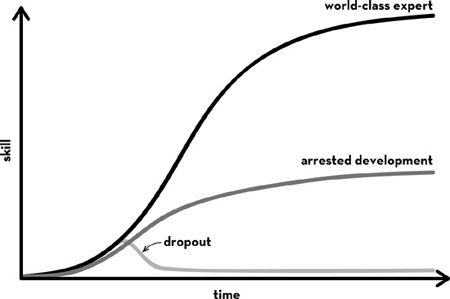

Chapter 7 Chapter 7
Chapter 7 Chapter 7In one of my earliest research studies, I found that grittier kids at the National Spelling Bee practiced more than their less gritty competitors. These extra hours of practice, in turn, explained their superior performance in final competition.
This finding made a lot of sense. As a math teacher, I’d observed a huge range in effort among my students. Some kids spent, quite literally, zero minutes a week on their homework; others studied for hours a day. Considering all the studies showing that gritty people typically stick with their commitments longer than others, it seemed like the major advantage of grit was, simply, more time on task.
At the same time, I could think of a lot of people who’d racked up decades of experience in their jobs but nevertheless seemed to stagnate at a middling level of competence. I’m sure you can, too. Think about it. Do you know anyone who’s been doing something for a long, long time—maybe their entire professional lives—and yet the best you can say of their skill is that they’re pretty much okay and not bad enough to fire? As a colleague of mine likes to joke: some people get twenty years of experience, while others get one year of experience . . . twenty times in a row.
Kaizen is Japanese for resisting the plateau of arrested development. Its literal translation is: “continuous improvement.” A while back, the idea got some traction in American business culture when it was touted as the core principle behind Japan’s spectacularly efficient manufacturing economy. After interviewing dozens and dozens of grit paragons, I can tell you that they all exude kaizen. There are no exceptions.
Likewise, in her interviews with “mega successful” people, journalist Hester Lacey has noticed that all of them demonstrate a striking desire to excel beyond their already remarkable level of expertise: “An actor might say, ‘I may never play a role perfectly, but I want to do it as well as I possibly can. And in every role, I want to bring something new. I want to develop.’ A writer might say, ‘I want every book I do to be better than the last.’
“It’s a persistent desire to do better,” Hester explained. “It’s the opposite of being complacent. But it’s a positive state of mind, not a negative one. It’s not looking backward with dissatisfaction. It’s looking forward and wanting to grow.”
My interview research made me wonder whether grit is not just about quantity of time devoted to interests, but also quality of time. Not just more time on task, but also better time on task.
I started reading everything I could about how skills develop.
Soon enough, this led me to the doorstep of cognitive psychologist Anders Ericsson. Ericsson has spent his career studying how experts acquire world-class skills. He’s studied Olympic athletes, chess grandmasters, renowned concert pianists, prima ballerinas, PGA golfers, Scrabble champions, and expert radiologists. The list goes on.
Put it this way: Ericsson is the world expert on world experts.
Below, I’ve drawn a graph that summarizes what Ericsson’s learned. If you track the development of internationally renowned performers, you invariably find that their skill improves gradually over years. As they get better, their rate of improvement slows. This turns out to be true for all of us. The more you know about your field, the slighter will be your improvement from one day to the next.

That there’s a learning curve for skill development isn’t surprising. But the timescale on which that development happens is. In one of Ericsson’s studies, the very best violinists at a German music academy accumulated about ten thousand hours of practice over ten years before achieving elite levels of expertise. By comparison, less accomplished students accumulated about half as much practice over the same period.
Perhaps not so coincidentally, the dancer Martha Graham declared, “It takes about ten years to make a mature dancer.” More than a century ago, psychologists studying telegraph operators observed that reaching complete fluency in Morse code was rare because of the “many years of hard apprenticeship” required. How many years? “Our evidence,” the researchers concluded, “is that it requires ten years to make a thoroughly seasoned press dispatcher.”
If you’ve read Ericsson’s original research, you know that ten thousand hours of practice spread over ten years is just a rough average. Some of the musicians he studied reached the high-water mark of expertise before that, and some after. But there’s a good reason why “the ten-thousand-hour rule” and “the ten-year-rule” have gone viral. They give you a visceral sense of the scale of the required investment. Not a few hours, not dozens, not scores, not hundreds. Thousands and thousands of hours of practice over years and years and years.
The really crucial insight of Ericsson’s research, though, is not that experts log more hours of practice. Rather, it’s that experts practice differently. Unlike most of us, experts are logging thousands upon thousands of hours of what Ericsson calls deliberate practice.
I suspected Ericsson could provide answers as to why, if practice is so important, experience doesn’t always lead to excellence. So I decided to ask him about it, using myself as a prime example.
“Look, Professor Ericsson, I’ve been jogging about an hour a day, several days a week, since I was eighteen. And I’m not a second faster than I ever was. I’ve run for thousands of hours, and it doesn’t look like I’m anywhere close to making the Olympics.”
“That’s interesting,” he replied. “May I ask you a few questions?”
“Sure.”
“Do you have a specific goal for your training?”
“To be healthy? To fit into my jeans?”
“Ah, yes. But when you go for a run, do you have a target in terms of the pace you’d like to keep? Or a distance goal? In other words, is there a specific aspect of your running you’re trying to improve?”
“Um, no. I guess not.”
Then he asked what I thought about while I was running.
“Oh, you know, I listen to NPR. Sometimes I think about the things I need to get done that day. I might plan what to make for dinner.”
Then he verified that I wasn’t keeping track of my runs in any systematic way. No diary of my pace, or my distance, or the routes I took, my ending heart rate, or how many intervals I’d sprinted instead of jogged. Why would I need to do that? There was no variety to my routine. Every run was like the last.
“I assume you don’t have a coach?”
I laughed.
“Ah,” he purred. “I think I understand. You aren’t improving because you’re not doing deliberate practice.”
This is how experts practice:
First, they set a stretch goal, zeroing in on just one narrow aspect of their overall performance. Rather than focus on what they already do well, experts strive to improve specific weaknesses. They intentionally seek out challenges they can’t yet meet. Olympic gold medal swimmer Rowdy Gaines, for example, said, “At every practice, I would try to beat myself. If my coach gave me ten 100s one day and asked me to hold 1:15, then the next day when he gave me ten 100s, I’d try to hold 1:14.”I Virtuoso violist Roberto Díaz describes “working to find your Achilles’ heel—the specific aspect of the music that needs problem solving.”
Then, with undivided attention and great effort, experts strive to reach their stretch goal. Interestingly, many choose to do so while nobody’s watching. Basketball great Kevin Durant has said, “I probably spend 70 percent of my time by myself, working on my game, just trying to fine-tune every single piece of my game.” Likewise, the amount of time musicians devote to practicing alone is a much better predictor of how quickly they develop than time spent practicing with other musicians.
As soon as possible, experts hungrily seek feedback on how they did. Necessarily, much of that feedback is negative. This means that experts are more interested in what they did wrong—so they can fix it—than what they did right. The active processing of this feedback is as essential as its immediacy.
Here’s how Ulrik Christensen learned this lesson. Christensen is a physician-turned-entrepreneur whose adaptive learning software is designed around the principles of deliberate practice. One of his early projects was a virtual reality game that teaches doctors the proper handling of urgent, complex cardiac conditions such as strokes and heart attacks. During one training session, he found himself alone with a physician who seemed unable to finish.
“I couldn’t figure it out,” Christensen told me. “This guy wasn’t stupid, but after hours of detailed feedback on what he’d done wrong, he still wasn’t getting the right answers. Everyone else had gone home, and there we were, stuck.” Exasperated, Christensen stopped him just before he got the next round of feedback. “Time-out,” Christensen said. “What you just did, treating this patient, is there anything you did just now where you were in doubt? Anything where you weren’t sure it met the new guidelines?”
The doctor thought a moment and then listed decisions he’d been certain about; then he named a few choices about which he was less sure. In other words, he reflected for a moment on what he knew and what he didn’t.
Christensen nodded, listening, and when the doctor was finished, he let him see the computer screen with the same feedback that had been displayed a dozen times before. On the next trial, the doctor executed the procedure correctly.
And after feedback, then what?
Then experts do it all over again, and again, and again. Until they have finally mastered what they set out to do. Until what was a struggle before is now fluent and flawless. Until conscious incompetence becomes unconscious competence.
In the story of the doctor who finally took a moment to think about what he was doing, Christensen kept the practice going until the doctor was doing the procedure without any errors at all. After four consecutive, perfectly correct repetitions, Christensen said, “Good job. We’re done with this for the day.”
And . . . then what? What follows mastery of a stretch goal?
Then experts start all over again with a new stretch goal.
One by one, these subtle refinements add up to dazzling mastery.
Deliberate practice was first studied in chess players and then in musicians and athletes. If you’re not a chess player, musician, or athlete, you might be wondering whether the general principles of deliberate practice apply to you.
Without hesitation, I can tell you the answer: YES. Even the most complex and creative of human abilities can be broken down into its component skills, each of which can be practiced, practiced, practiced.
For example, deliberate practice is how Benjamin Franklin described improving his writing. In his autobiography, Franklin describes collecting the very best essays in his favorite magazine, the Spectator. He read and reread them, taking notes, and then he hid the originals in a drawer. Next, Franklin rewrote the essays. “Then I compared my Spectator with the original, discovered some of my faults, and corrected them.” Like the modern-day experts Ericsson studies, Franklin zeroed in on specific weaknesses and drilled them relentlessly. For instance, to improve his ability to make logical arguments, Franklin would jumble his notes on essays and then attempt to put them in a sensible order: “This was to teach me method in the arrangement of the thoughts.” Likewise, to enhance his command of language, Franklin practiced, over and over again, the translation of prose into poetry and poetry into prose.
Franklin’s witty aphorisms make it hard to believe he wasn’t a “natural” writer from the very start. But perhaps we should let Franklin himself have the last word on the matter: There are no gains without pains.
But what if you’re not a writer, either?
If you’re in business, listen to what management guru Peter Drucker said after a lifetime of advising CEOs. Effective management “demands doing certain—and fairly simple—things. It consists of a small number of practices. . . .”
If you’re a surgeon, consider what Atul Gawande has said: “People often assume that you have to have great hands to become a surgeon, but it’s not true.” What’s most important, Gawande said, is “practicing this one difficult thing day and night for years on end.”
If you want to break a world record, as magician David Blaine did when he held his breath underwater for seventeen minutes, watch his TED talk. At the very end, the man who can control every aspect of his physiology breaks down, sobbing: “As a magician, I try to show things to people that seem impossible. And I think magic, whether I’m holding my breath or shuffling a deck of cards, is pretty simple. It’s practice, it’s training, and it’s”—he sobs—“experimenting”—he sobs again—“while pushing through the pain to be the best that I can be. And that’s what magic is to me. . . .”
After getting to know each other a little better, Ericsson and I designed a study to discover how, exactly, gritty kids triumph at the National Spelling Bee.
I already knew that grittier spellers accumulated more practice and performed better than their less gritty competitors. What I didn’t know was whether deliberate practice was driving these skill improvements, and whether it was grit that enabled spellers to do more of it.
With the help of Ericsson’s students, we began by interviewing spelling bee finalists to learn what sorts of things they did to prepare for competition. In parallel, we pored through published books on the topic, including How to Spell Like a Champ by the bee’s own national director, Paige Kimble.
We learned that there are basically three types of activities recommended by experienced spellers, their parents, and coaches: First, reading for pleasure and playing word games like Scrabble. Second, getting quizzed by another person or a computer program. Third, unassisted and solitary spelling practice, including memorizing new words from the dictionary, reviewing words in a spelling notebook, and committing to memory Latin, Greek, and other word origins. Only this third category of activity met the criteria for deliberate practice.
Several months before the final competition, spellers were mailed questionnaires. In addition to the Grit Scale, we asked them to complete a log in which they estimated the hours per week they spent on various spelling activities. We also asked them to rate how it felt to do these activities—in terms of enjoyment and effort—in the moment they were doing them.
That May, when the finals aired on ESPN, Anders Ericsson and I were watching.
Who took home the trophy? A thirteen-year-old girl named Kerry Close. It was her fifth consecutive year of competition, and from the log she completed in our study, I estimate she’d accumulated at least three thousand hours of spelling practice. Kerry’s triumphant last words at the microphone, articulated with confidence and a smile, were: “Ursprache. U-R-S-P-R-A-C-H-E. Ursprache.”
“I’m studying as hard as I can for my last year—to go for it,” Kerry told a journalist who’d been tracking her preparations. “I’m trying to learn words off the regular list, to learn more obscure words that have a chance of coming up.” The year before, the same journalist made the observation that Kerry “does more word study by herself. She works with numerous spelling study guides, makes lists of interesting words from her reading, and labors her way through the dictionary.”
When we analyzed our data, we first confirmed what I’d found the year before: grittier spellers practiced more than less gritty spellers. But the most important finding was that the type of practice mattered tremendously. Deliberate practice predicted advancing to further rounds in final competition far better than any other kind of preparation.
When I share these findings with parents and students, I hasten to add that there are many, many learning benefits to being quizzed. Shining a light on what you think you know but actually haven’t yet mastered is one. Indeed, winner Kerry Close later told me that she used quizzing to diagnose her weaknesses—to identify certain words or types of words she consistently misspelled so that she could focus her efforts on mastering them. In a sense, quizzing may have been a necessary prelude to doing more targeted, more efficient, deliberate practice.
What about reading for fun? Nada. Pretty much all of the kids in the National Spelling Bee are interested in language, but there wasn’t even a hint of a relationship between reading for fun, which they all enjoyed, and spelling prowess.
If you judge practice by how much it improves your skill, then deliberate practice has no rival. This lesson seemed to become increasingly clear to spellers as they spent more time competing. With each successive year of experience, they spent more time practicing deliberately. The same trend was even more pronounced in the month before the actual finals, when the average speller was devoting ten hours per week to deliberate practice.
If, however, you judge practice by what it feels like, you might come to a different conclusion. On average, spellers rated deliberate practice as significantly more effortful, and significantly less enjoyable, than anything else they did to prepare for competition. In contrast, spellers experienced reading books for pleasure and playing word games like Scrabble as effortless and as enjoyable as “eating your favorite food.”
A vivid—if somewhat melodramatic—firsthand description of what deliberate practice can feel like comes from dancer Martha Graham: “Dancing appears glamorous, easy, delightful. But the path to the paradise of that achievement is not easier than any other. There is fatigue so great that the body cries even in its sleep. There are times of complete frustration. There are daily small deaths.”
Not everyone would describe working outside their comfort zone in such extreme terms, but Ericsson generally finds that deliberate practice is experienced as supremely effortful. As evidence that working at the far edge of our skills with complete concentration is exhausting, he points out that even world-class performers at the peak of their careers can only handle a maximum of one hour of deliberate practice before needing a break, and in total, can only do about three to five hours of deliberate practice per day.
It’s also relevant that many athletes and musicians take naps after their most intensive training sessions. Why? Rest and recovery may seem an obvious necessity for athletes. But nonathletes say much the same about their most intense exertions, suggesting that it is the mental work, as much as the physical stresses, that makes deliberate practice so strenuous. For instance, here’s how director Judd Apatow describes making a film: “Every day is an experiment. Every scene might not work and so you’re concentrating—Is it working? Should I get an extra line for editing? What would I change if I had to, if I hated this in three months, why would I hate it? And you’re concentrating and you’re exhausted. . . . It’s pretty intense.”
And, finally, world-class performers who retire tend not to keep up nearly the same deliberate practice schedule. If practice was intrinsically pleasurable—enjoyable for its own sake—you’d expect them to keep doing it.
The year after Ericsson and I began working together, Mihaly CsikszentmihalyiII spent his summer at my university as a scholar in residence. Csikszentmihalyi is as eminent a psychologist as Ericsson, and both have devoted their careers to studying experts. But their accounts of world-class expertise couldn’t be more different.
For Csikszentmihalyi, the signature experience of experts is flow, a state of complete concentration “that leads to a feeling of spontaneity.” Flow is performing at high levels of challenge and yet feeling “effortless,” like “you don’t have to think about it, you’re just doing it.”
For example, an orchestra conductor told Csikszentmihalyi:
You are in an ecstatic state to such a point that you feel as though you almost don’t exist. . . . My hand seems devoid of myself, and I have nothing to do with what’s happening. I just sit there watching in a state of awe and wonderment. And [the music] just flows out by itself.
And a competitive figure skater gave this description of the flow state:
It was just one of those programs that clicked. I mean everything went right, everything felt good . . . it’s just such a rush, like you could feel it could go on and on and on, like you don’t want it to stop because it’s going so well. It’s almost as though you don’t have to think, everything goes automatically without thinking. . . .
Csikszentmihalyi has gathered similar first-person reports from hundreds of experts. In every field studied, optimal experience is described in similar terms.
Ericsson is skeptical that deliberate practice could ever feel as enjoyable as flow. In his view, “skilled people can sometimes experience highly enjoyable states (‘flow’ as described by Mihaly Csikszentmihalyi, 1990) during their performance. These states are, however, incompatible with deliberate practice. . . .” Why? Because deliberate practice is carefully planned, and flow is spontaneous. Because deliberate practice requires working where challenges exceed skill, and flow is most commonly experienced when challenge and skill are in balance. And, most important, because deliberate practice is exceptionally effortful, and flow is, by definition, effortless.
Csikszentmihalyi has published a contrary opinion: “Researchers who study the development of talents have concluded that to learn any complex skill well takes about 10,000 hours of practice. . . . And the practice can be very boring and unpleasant. While this state of affairs is all too often true, the consequences are by no means self-evident.” Csikszentmihalyi goes on to share a personal story that helps explain his perspective. In Hungary, where he grew up, on the tall wooden gate at the entrance to the local elementary school, hung a sign that read: The roots of knowledge are bitter, but its fruits are sweet. This always struck him as deeply untrue: “Even when the learning is hard,” he writes, “it is not bitter when you feel that it is worth having, that you can master it, that practicing what you learned will express who you are and help you achieve what you desire.”
As fate would have it, the same summer Csikszentmihalyi was visiting, Ericsson was also in town. I arranged for them to debate the topic of “passion and world-class performance” before an audience of about eighty educators.
When they sat down at the table in the front of the lecture hall, I realized that the two men are near-perfect doppelgängers. Both are tall and solidly built. Both are European by birth, with slight accents that somehow make them seem even more eminent and scholarly. Both sport close-cropped beards, and though only Csikszentmihalyi’s has gone all white, either man would be a good choice if you were looking for someone to play Santa Claus.
On the day of the panel, I was a little anxious. I don’t like conflict—even when it’s not mine.
It turns out I had nothing to worry about. The proponents of deliberate practice versus flow behaved as perfect gentlemen. No insults were exchanged. There wasn’t even a hint of disrespect.
Instead, Ericsson and Csikszentmihalyi sat shoulder to shoulder, each taking the microphone when it was their turn, each methodically summarizing decades of research supporting starkly contrasting perspectives. When one was speaking, the other appeared to listen intently. And then the microphone would change hands. So it went for ninety minutes.
Do experts suffer, I wanted to know. Or are they ecstatic?
Somehow, the dialogue I hoped would resolve this conundrum played out as two separate presentations—one on deliberate practice and the other on flow—spliced together.
When it was all over, I found myself a little disappointed. It wasn’t the drama that I missed, it was the resolution. I still didn’t have an answer to my question: Is expert performance a matter of arduous and not-so-fun-in-the-moment exertion, or can it be effortless and joyous?
For years after that anticlimactic summit, I read and thought about the issue. Finally, because I never developed the conviction that might prompt me to reject one side and take the other, I decided to collect some data. I asked thousands of adults who’d taken the Grit Scale online to take a second questionnaire assessing flow. The participants in this study included men and women of all ages representing all manner of professions: actors, bakers, bank tellers, barbers, dentists, doctors, police officers, secretaries, teachers, waiters, and welders . . . to name just a few.
Across these diverse occupations, grittier adults reported experiencing more flow, not less. In other words, flow and grit go hand in hand.
Putting together what I learned from this survey, the findings on National Spelling Bee finalists, and a decadelong inspection of the relevant research literature, I’ve come to the following conclusion: Gritty people do more deliberate practice and experience more flow. There’s no contradiction here, for two reasons. First, deliberate practice is a behavior, and flow is an experience. Anders Ericsson is talking about what experts do; Mihaly Csikszentmihalyi is talking about how experts feel. Second, you don’t have to be doing deliberate practice and experiencing flow at the same time. And, in fact, I think that for most experts, they rarely go together.
More research is needed to settle the question, and in the next few years, I’m hoping that Ericsson, Csikszentmihalyi, and I can collaborate to do exactly that.
Currently, my view is that the primary motivation for doing effortful deliberate practice is to improve your skill. You’re concentrating one hundred percent, and you’ve deliberately set the level of challenge to exceed your current level of skill. You’re in “problem solving” mode, analyzing everything you do to bring it closer to the ideal—the goal you set at the beginning of the practice session. You’re getting feedback, and a lot of that feedback is about what you’re doing wrong, and you’re using that feedback to make adjustments and try again.
The motivation that predominates during flow, in contrast, is entirely different. The flow state is intrinsically pleasurable. You don’t care whether you’re improving some narrow aspect of your skill set. And though you’re concentrating one hundred percent, you’re not at all in “problem solving” mode. You’re not analyzing what you’re doing; you’re just doing. You’re getting feedback, but because the level of challenge just meets your current level of skill, that feedback is telling you that you’re doing a lot right. You feel like you’re in complete control, because you are. You’re floating. You lose track of time. No matter how fast you’re running or how intensely you’re thinking, when you’re in flow, everything feels effortless.
In other words, deliberate practice is for preparation, and flow is for performance.
Let’s return to swimmer Rowdy Gaines.
Gaines told me he once tabulated how much practice it took to develop the stamina, technique, confidence, and judgment to win an Olympic gold medal. In the eight-year period leading up to the 1984 games, he swam, in increments of fifty-yard laps, at least twenty thousand miles. Of course, if you add in the years before and after, the odometer goes even higher.
“I swam around the world,” he told me with a soft laugh, “for a race that lasted forty-nine seconds.”
“Did you enjoy those miles?” I asked. “I mean, did you love practicing?”
“I’m not going to lie,” he replied. “I never really enjoyed going to practice, and I certainly didn’t enjoy it while I was there. In fact, there were brief moments, walking to the pool at four or four-thirty in the morning, or sometimes when I couldn’t take the pain, when I’d think, ‘God, is this worth it?’ ”
“It’s very simple,” Rowdy said. “It’s because I loved swimming. . . . I had a passion for competing, for the result of training, for the feeling of being in shape, for winning, for traveling, for meeting friends. I hated practice, but I had an overall passion for swimming.”
Olympic gold medalist rower Mads Rasmussen offered a similar account of his motivation: “It’s about hard work. When it’s not fun, you do what you need to do anyway. Because when you achieve results, it’s incredibly fun. You get to enjoy the ‘Aha’ at the end, and that is what drags you along a lot of the way.”
The idea of years of challenge-exceeding-skill practice leading to moments of challenge-meeting-skill flow explains why elite performance can look so effortless: in a sense, it is. Here’s an example. Eighteen-year-old swimmer Katie Ledecky recently broke her own world record in the 1,500-meter freestyle. Improbably, history was made during a preliminary round at a competition in Kazan, Russia. “To be honest, it felt pretty easy,” she said afterward. “I was so relaxed.” But it’s not flow to which Ledecky credits her speed: “Breaking that record is testament to the work I have put in and the shape I am in right now.”
Indeed, Ledecky has been swimming since she was six. She’s developed a reputation for working fiercely hard at every single practice, sometimes training with male swimmers for added challenge. Three years ago, Ledecky described blanking out a little bit in the race that won her the gold medal in the eight-hundred-meter freestyle. “One thing in terms of swimming that people don’t really know,” she later said, “is that the work you put in [during] practice shows off in the meet.”
Here’s my own story of hours of effortful deliberate practice leading to moments of effortless flow. A few years ago, a producer named Juliet Blake called to ask if I’d be interested in giving a six-minute TED talk. “Sure,” I said. “Sounds fun!”
“Wonderful! After you have your talk ready, we’ll have a video conference where we watch you give it, and we’ll give you some feedback. You know, something like a rehearsal.”
Hmmm, “feedback” you say? Something other than applause? More slowly, I said, “Sure . . . that sounds fine.”
I prepared a talk and on the appointed day connected with Juliet and her boss, the leader of TED, Chris Anderson. Staring into the webcam, I delivered my talk in the allotted time. Then I waited for my effusive praise.
If there was any, I missed it.
Instead, what I got was Chris telling me he’d gotten lost in all my scientific jargon. Too many syllables. Too many slides. And not enough clear, understandable examples. Further, how I’d come to this whole line of research—my road from teacher to psychologist—was unclear and unsatisfying. Juliet agreed. She added that I’d managed to tell a story with absolutely zero suspense. The way I’d designed my talk was like telling the punch line of a joke at the very beginning.
Ouch! That bad, huh? Juliet and Chris are busy people, and I knew I wouldn’t get a second chance at getting coached. So I forced myself to listen. Afterward, I pondered who knew better how to give a great talk on grit: them or me?
It didn’t take long to realize that they were the experienced storytellers, and I was the scientist who needed feedback to make her talk better.
So I rewrote the talk, practiced in front of my family, and got more negative feedback. “Why do you say ‘Um’ all the time?” my older daughter, Amanda, asked. “Yeah, why do you do that, Mom?” my younger daughter, Lucy, chimed in. “And you bite your lip when you’re nervous. Don’t do that. It’s distracting.”
More practice. More refinements.
Then the fateful day arrived. I gave a talk that bore only a weak resemblance to the one I’d originally proposed. It was better. A lot better. Watch that talk and you’ll see me in flow. Search YouTube for the many rehearsals that preceded it—or, for that matter, footage of anyone doing effortful, mistake-ridden, repetitive deliberate practice—and my guess is you’ll come up empty.
Nobody wants to show you the hours and hours of becoming. They’d rather show the highlight of what they’ve become.
After it was all over, I rushed to meet my husband and mother-in-law, who’d been in the audience that day to cheer me on. As soon as they were within earshot, I called out preemptively: “Just the effusive praise, please!” And they delivered.
Lately, I’ve been asking gritty performers and their coaches in diverse fields to elaborate on how it feels to do deliberate practice. Many agree with dancer Martha Graham that attempting to do what you cannot yet do is frustrating, uncomfortable, and even painful.
However, some have suggested that, in fact, the experience of deliberate practice can be extremely positive—not just in the long-term but in the moment. Fun isn’t quite the word they use to describe deliberate practice, but neither is bitter. And, too, top performers point out that the alternative to deliberate practice—mindlessly “going through the motions” without improvement—can be its own form of suffering.
I puzzled over these observations for a while, and then I decided to look back at the diary data that Ericsson and I had collected from the National Spelling Bee finalists. While I knew that spellers rated deliberate practice as especially effortful and unenjoyable, I also recalled that there was quite a spread around these averages. In other words, not all spellers had the same exact experience.
I looked to see how grittier competitors experienced deliberate practice. Compared to their less passionate, less persevering competitors, grittier spellers not only logged more hours of deliberate practice, they rated it as both more enjoyable and more effortful. That’s right. Grittier kids reported working harder than other kids when doing deliberate practice but, at the same time, said they enjoyed it more than other kids, too.
It’s hard to know for sure what to make of this finding. One possibility is that grittier kids spend more time doing deliberate practice, and that, over the years, they develop a taste for hard work as they experience the rewards of their labor. This is the “learn to love the burn” story. Alternatively, it could be that grittier kids enjoy the hard work more, and that gets them to do more of it. This is the “some people enjoy a challenge” story.
I can’t tell you which of these accounts is accurate, and if I had to guess, I’d say there’s some truth to both. As we’ll learn in chapter 11, there’s solid scientific evidence that the subjective experience of effort—what it feels like to work hard—can and does change when, for example, effort is rewarded in some way. I’ve watched my own daughters learn to enjoy working hard more than they used to, and I can say the same for myself.
On the other hand, Katie Ledecky’s coach, Bruce Gemmell, says she’s always relished a tough challenge.
“There’s a little video clip that Katie’s parents have of one of her first swim meets,” Bruce told me. “It’s just one lap. She’s six years old. She swims a few strokes and then grabs on to the lane line. She swims a few more strokes and grabs on to the lane line again. Finally, she gets to the end of the pool and gets out of the water. Dad’s filming it, and he asks, ‘Tell me about your first race. How was it?’ She goes, ‘Great!’ A few seconds later, she adds, ‘That was hard!’ And she’s beaming—a smile from ear to ear. That says it all right there. She has that attitude with everything we do.”
In the same conversation, Bruce told me that Katie willingly does more deliberate practice than anyone he’s ever met. “We’ll try a drill that she’s horrible at—something where she’ll start off in the poorest third of the group doing it. Then I’ll catch her sneaking practice time to get better at it, so within some period of time, she’s one of the best in the group. Some other swimmers, well, they try and they fail at it, and I have to cajole and beg them to try it again.”
If deliberate practice can be “awesome,” can it ever feel like effortless flow?
When I asked spelling champ Kerry Close if she’d ever experienced the state of flow during deliberate practice, she said, “No, the only time I could say that I was in flow was when I wasn’t being challenged.” At the same time, she described deliberate practice as gratifying in its own way: “Some of my most rewarding studying,” she told me, “was on my own, forcing myself to break down a big task into multiple parts and getting it done.”
As of now, there isn’t enough research to say whether deliberate practice can be experienced as effortless flow. My guess is that deliberate practice can be deeply gratifying, but in a different way than flow. In other words, there are different kinds of positive experience: the thrill of getting better is one, and the ecstasy of performing at your best is another.
Other than getting yourself a terrific coach, mentor, or teacher, how can you get the most out of deliberate practice and—because you’ve earned it—experience more flow?
First, know the science.
Each of the basic requirements of deliberate practice is unremarkable:
• A clearly defined stretch goal
• Full concentration and effort
• Immediate and informative feedback
• Repetition with reflection and refinement
But how many hours of practice do most people accomplish that checks all four of these boxes? My guess is that many people are cruising through life doing precisely zero hours of daily deliberate practice.
Even supermotivated people who’re working to exhaustion may not be doing deliberate practice. For instance, when a Japanese rowing team invited Olympic gold medalist Mads Rasmussen to come visit, he was shocked at how many hours of practice their athletes were logging. It’s not hours of brute-force exhaustion you’re after, he told them. It’s high-quality, thoughtful training goals pursued, just as Ericsson’s research has shown, for just a few hours a day, tops.
Noa Kageyama, a performance psychologist on the faculty of the Juilliard School of Music, says he’s been playing the violin since he was two but didn’t really start practicing deliberately until he was twenty-two. Why not? There was no lack of motivation—at one point, young Noa was taking lessons with four different teachers and, literally, commuting to three different cities to work with them all. Really, the problem was just that Noa didn’t know better. Once he discovered there was an actual science of practice—an approach that would improve his skills more efficiently—both the quality of his practice and his satisfaction with his progress skyrocketed. He’s now devoted himself to sharing that knowledge with other musicians.
A few years ago, my graduate student Lauren Eskreis-Winkler and I decided to teach kids about deliberate practice. We put together self-guided lessons, complete with cartoons and stories, illustrating key differences between deliberate practice and less effective ways of studying. We explained that no matter their initial talent, great performers in every domain improve through deliberate practice. We let students know that hidden behind every effortless performance on YouTube are hours and hours of unrecorded, invisible-to-outsiders, challenging, effortful, mistake-ridden practice. We told them that trying to do things they can’t yet do, failing, and learning what they need to do differently is exactly the way experts practice. We helped them understand that feelings of frustration aren’t necessarily a sign they’re on the wrong track. On the contrary, we told them that wishing they did things better is extremely common during learning. We then tested this intervention against different kinds of placebo control activities.
What we found is that students can change the way they think about practice and achievement. For instance, asked what advice they’d give to another student on how to succeed in school, students who learned about deliberate practice were more likely to recommend “focus on your weaknesses” and “concentrate one hundred percent.” Given the choice between doing deliberate practice in math versus entertaining themselves with social media and gaming websites, they elected to do more deliberate practice. And, finally, in the case of those who’d been performing at a below-average level in class, learning about deliberate practice increased their report card grades.
Which leads to my second suggestion for getting the most out of deliberate practice: Make it a habit.
By this I mean, figure out when and where you’re most comfortable doing deliberate practice. Once you’ve made your selection, do deliberate practice then and there every day. Why? Because routines are a godsend when it comes to doing something hard. A mountain of research studies, including a few of my own, show that when you have a habit of practicing at the same time and in the same place every day, you hardly have to think about getting started. You just do.
The book Daily Rituals by Mason Currey describes a day in the life of one hundred sixty-one artists, scientists, and other creators. If you look for a particular rule, like Always drink coffee, or Never drink coffee, or Only work in your bedroom, or Never work in your bedroom, you won’t find it. But if instead you ask, “What do these creators have in common?” you’ll find the answer right in the title: daily rituals. In their own particular way, all the experts in this book consistently put in hours and hours of solitary deliberate practice. They follow routines. They’re creatures of habit.
For instance, cartoonist Charles Schulz, who drew almost eighteen thousand Peanuts comic strips in his career, rose at dawn, showered, shaved, and had breakfast with his children. He then drove his kids to school and went to his studio, where he worked through lunch (a ham sandwich and a glass of milk) until his children returned from school. Writer Maya Angelou’s routine was to get up and have coffee with her husband, and then, by seven in the morning, deliver herself to a “tiny mean” hotel room with no distractions until two in the afternoon.
Eventually, if you keep practicing in the same time and place, what once took conscious thought to initiate becomes automatic. “There is no more miserable human being,” observed William James, than the one for whom “the beginning of every bit of work” must be decided anew each day.
I myself learned that lesson quickly. I now know what Joyce Carol Oates meant when she likened completing the first draft of a book to “pushing a peanut across a very dirty kitchen floor with your nose.” So what’d I do? Here’s the simple daily plan that helped me get going: When it’s eight in the morning and I’m in my home office, I will reread yesterday’s draft. This habit didn’t make the writing easier, per se, but it sure made it easier to get started.
My third suggestion for getting the most out of deliberate practice is to change the way you experience it.
Around the time I was revisiting my National Spelling Bee data and discovering how much more enjoyable the experience of deliberate practice is for grittier competitors, I called up a swimming coach named Terry Laughlin. Terry has coached every level of swimmer, from complete newbie to Olympic champion, and broken records himself in open-water Masters swimming. I was particularly interested in his perspective because he’s long advocated what he calls a “total immersion” approach to swimming—essentially a relaxed, mindful approach to gliding through the water.
“Deliberate practice can feel wonderful,” Terry told me. “If you try, you can learn to embrace challenge rather than fear it. You can do all the things you’re supposed to do during deliberate practice—a clear goal, feedback, all of it—and still feel great while you’re doing it.
“It’s all about in-the-moment self-awareness without judgment,” he continued. “It’s about relieving yourself of the judgment that gets in the way of enjoying the challenge.”
After hanging up with Terry, I began to think about the fact that infants and toddlers spend most of their time trying to do things they can’t, again and again—and yet they don’t seem especially embarrassed or anxious. No pain, no gain is a rule that doesn’t seem to apply to the preschool set.
Elena Bodrova and Deborah Leong, psychologists who’ve devoted their careers to studying how children learn, agree that learning from mistakes is something babies and toddlers don’t mind at all. Watch a baby struggle to sit up, or a toddler learn to walk: you’ll see one error after another, failure after failure, a lot of challenge exceeding skill, a lot of concentration, a lot of feedback, a lot of learning. Emotionally? Well, they’re too young to ask, but very young children don’t seem tortured while they’re trying to do things they can’t yet do.
And then . . . something changes. According to Elena and Deborah, around the time children enter kindergarten, they begin to notice that their mistakes inspire certain reactions in grown-ups. What do we do? We frown. Our cheeks flush a bit. We rush over to our little ones to point out that they’ve done something wrong. And what’s the lesson we’re teaching? Embarrassment. Fear. Shame. Coach Bruce Gemmell says that’s exactly what happens to many of his swimmers: “Between coaches and parents and friends and the media, they’ve learned that failing is bad, so they protect themselves and won’t stick their neck out and give their best effort.”
“Shame doesn’t help you fix anything,” Deborah told me.
So what’s to be done?
Elena and Deborah ask teachers to model emotion-free mistake making. They actually instruct teachers to commit an error on purpose and then let students see them say, with a smile, “Oh, gosh, I thought there were five blocks in this pile! Let me count again! One . . . two . . . three . . . four . . . five . . . six! There are six blocks! Great! I learned I need to touch each block as I count!”
Whether you can make deliberate practice as ecstatic as flow, I don’t know, but I do think you can try saying to yourself, and to others, “That was hard! It was great!”
I. This means swimming one hundred meters in one minute and fifteen seconds, and then trying to do the same in one minute and fourteen seconds, and so on.
II. Pronounced cheeks-sent-me-high. And for years, Mihaly has gone by “Mike.”